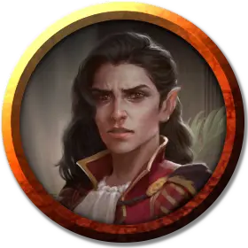

Калейн
Kalain
Средний Гуманоид (Полуэльфийка), хаотично-злой, именной НИП

Класс Доспеха 15 (кольчужная рубаха)
Хиты 44 (8к8 + 8)
Скорость 30 футов
| мод | спас | ||
|---|---|---|---|
| СИЛ | 11 | +0 | +0 |
| ЛОВ | 14 | +2 | +4 |
| ТЕЛ | 12 | +1 | +1 |
| мод | спас | ||
|---|---|---|---|
| ИНТ | 10 | +0 | +0 |
| МДР | 13 | +1 | +3 |
| ХАР | 14 | +2 | +2 |
Навыки Акробатика +4, Восприятие +5, Выступление +6
Чувства тёмное зрение 60 футов, пассивное Восприятие 15
Языки Общий, Эльфийский
Опасность 2 (450 опыта)
Бонус мастерства +2
Особенности
Наследие фей. Калейн совершает с преимуществом спасброски от очарования, и магия не может её усыпить.
Колдовство. . Калейн является заклинателем 4-го уровня. Её базовой характеристикой является Харизма (Сл спасброска от заклинания 12, +4 к попаданию атаками заклинаниями). У неё подготовлены следующие заклинания барда:
• Заговоры (неограниченно): дружба, волшебная рука, злая насмешка.
• 1 уровень (4 ячейки): очарование личности, лечащее слово, героизм, усыпление, волна грома.
• 2 уровень (3 ячейки): невидимость, дребезги.
Искусство имитирующее жизнь (3/день). Калейн касается одной из своих картин, и изображение оживает, становясь существом, если его ПО 3 или ниже. Существо появляется в свободном пространстве в пределах 5 футов от картины, которая становится пустой. Существо дружественно Калейн и враждебно ко всем остальным. Совершите для него бросок инициативы. Существо исчезает через 1 минуту, а также если его Хиты снизятся до 0 или если Калейн умрёт или потеряет сознание.
Насмешка (2/день). Калейн может бонусным действием в свой ход выбрать одно существо в пределах 30 футов. Если цель может слышать Калейн, то цель должна преуспеть в спасброске Харизмы Сл 12 или до конца следующего хода Калейн будет вынужден проходить с помехой все проверки, броски атак и спасброски.
Действия
Короткий меч. Рукопашная атака оружием: +4 к попаданию, досягаемость 5 футов, одна цель. Попадание: Колющий урон 5 (1к6 + 2).
Короткий лук. Дальнобойная атака оружием: +4 к попаданию, дистанция 80/320 футов, одна цель. Попадание: Колющий урон 5 (1к6 + 2).
Описание
Калейн проводит большую часть времени в зоне В5, где у неё студия. Тут много заплесневелых объедков, пустых банок с засохшей краской, разбросанные кисти и мольберт, стоящий напротив большого окна со свинцовыми перекладинами в северной стене. На мольберте — новая картина с ускользающим зверем. Если персонажи повздорят с Калейн, она объявит их убийцами, оживит ускользающего зверя и прикажет атаковать их.
Барды – одаренные поэты, рассказчики и артисты, которые повсюду путешествуют, но чаще всего находятся в тавернах или в веселых группах приключенцев, наемных бойцов и влиятельных покровителей.